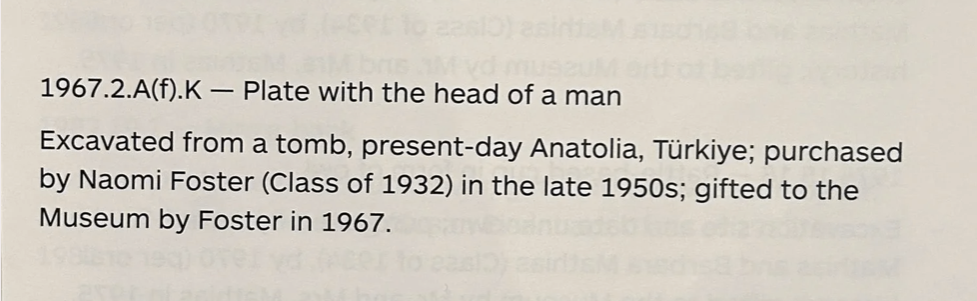
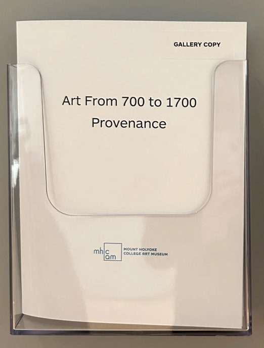
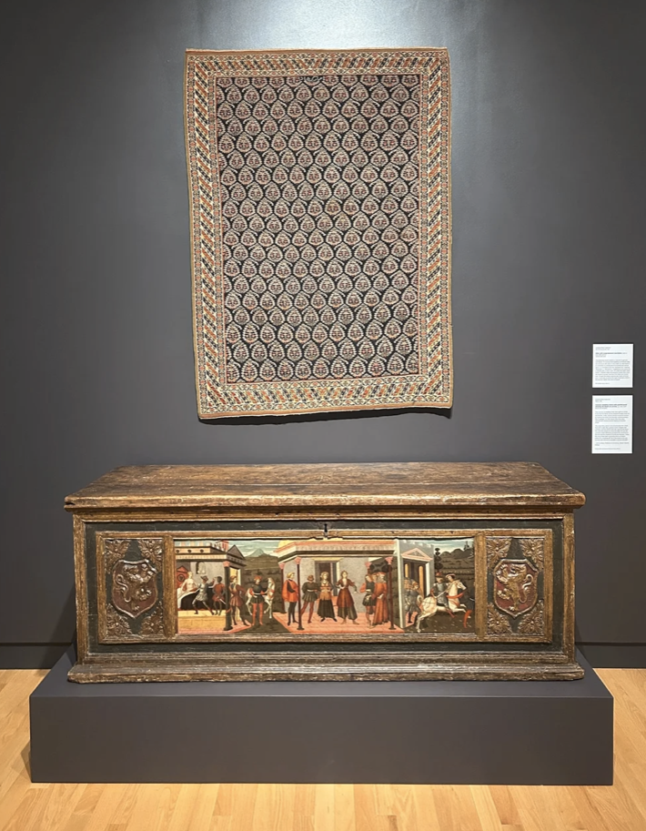
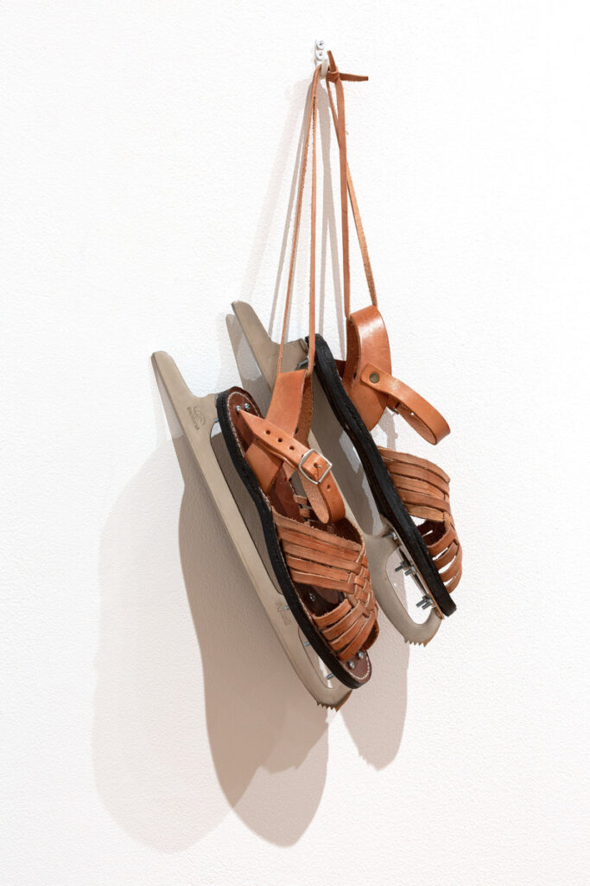
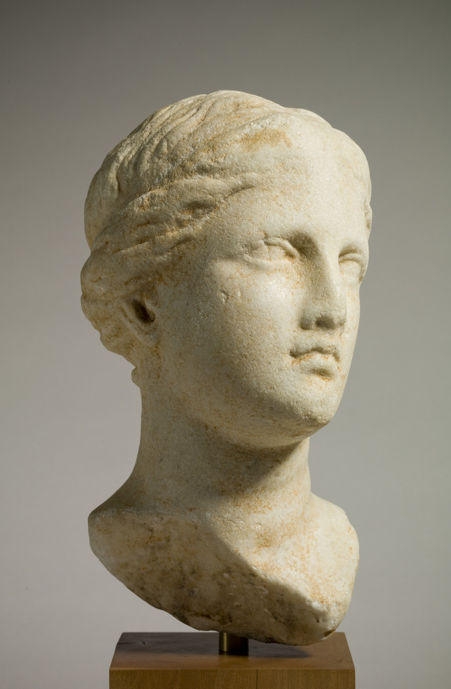
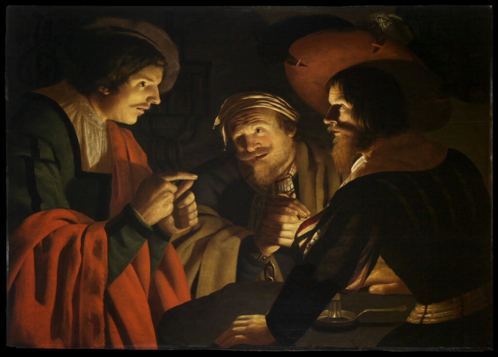
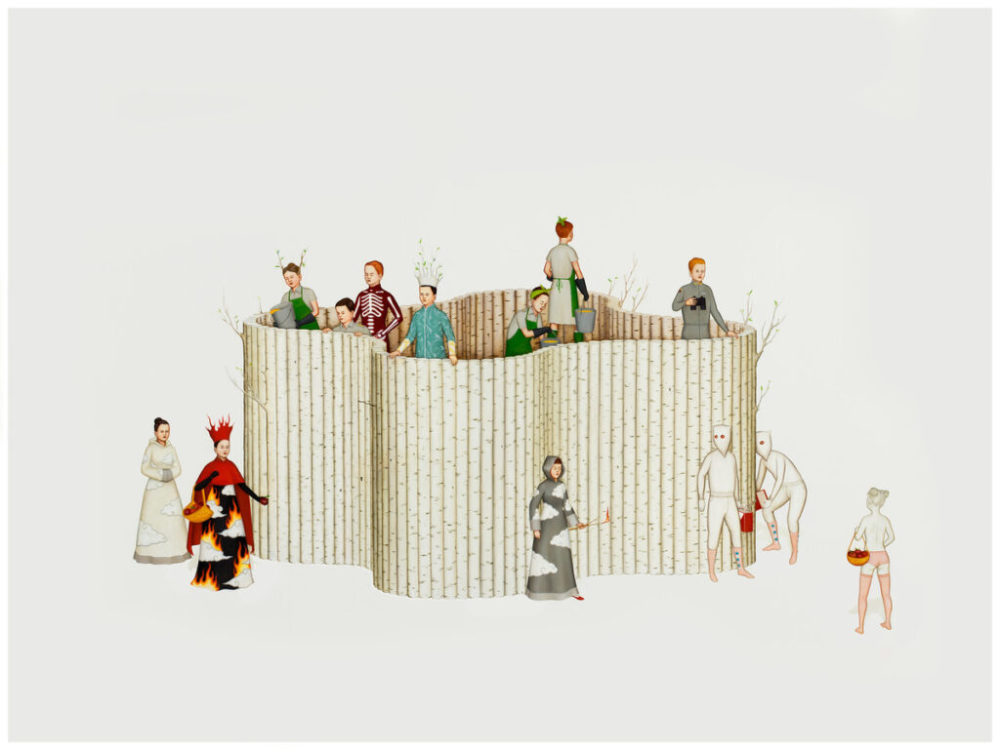

The Museum as a Data Lab
Art Museums as Blueprints for Datasets
Thesis
My time at the Mount Holyoke College Art Museum (MHCAM) served as a field site to study how creative knowledge is mediated. I view museum curation not just as an art, but as a technical precursor to the representational pipelines of generative AI.

1. The Data: Traceability & Provenance
Observation: Provenance booklets meticulously trace an object's lineage, even when the specific maker is unidentified.
Insight: Attribution is a choice. Documenting cultural origin and excavation history restores dignity to the work.
AI Translation: This inspired my labeling paradigm. I design ontologies that encapsulate key contextual metadata to preserve cultural specificity and prevent erasure.


2. The Structure: Resisting Abstraction
Observation: Chronological curation replaces rigid categorization with radical juxtapositions—pairing a 19th-century Iranian carpet with a 15th-century Italian wedding chest.
The Link: Despite being separated by 400 years and 3,000 miles, both were wedding gifts.
AI Translation: This Relational Logic allows influences to be compared without rigid categorization. I build systems that honor the ambiguity and narrative variation of creative knowledge over rigid labels.

3. The Test: Interaction Experiment
The Experiment: I curated a tour titled Our Stories Retold, featuring four objects spanning the 1st Century BCE to 2013 that shared no geographical or thematic link.




Discovery: Removing pre-packaged themes granted visitors the interpretative freedom to connect their personal histories with the artist’s identity.
Outcome: Meaning is a negotiated dialogue, not a fixed label. Objects do not need to be forced into categories; doing so restricts our capacity to understand them.
Translation: Creative tools must facilitate a dialogue between authorship and plurality, allowing users to navigate complex knowledge without the restrictions of standardized labeling.